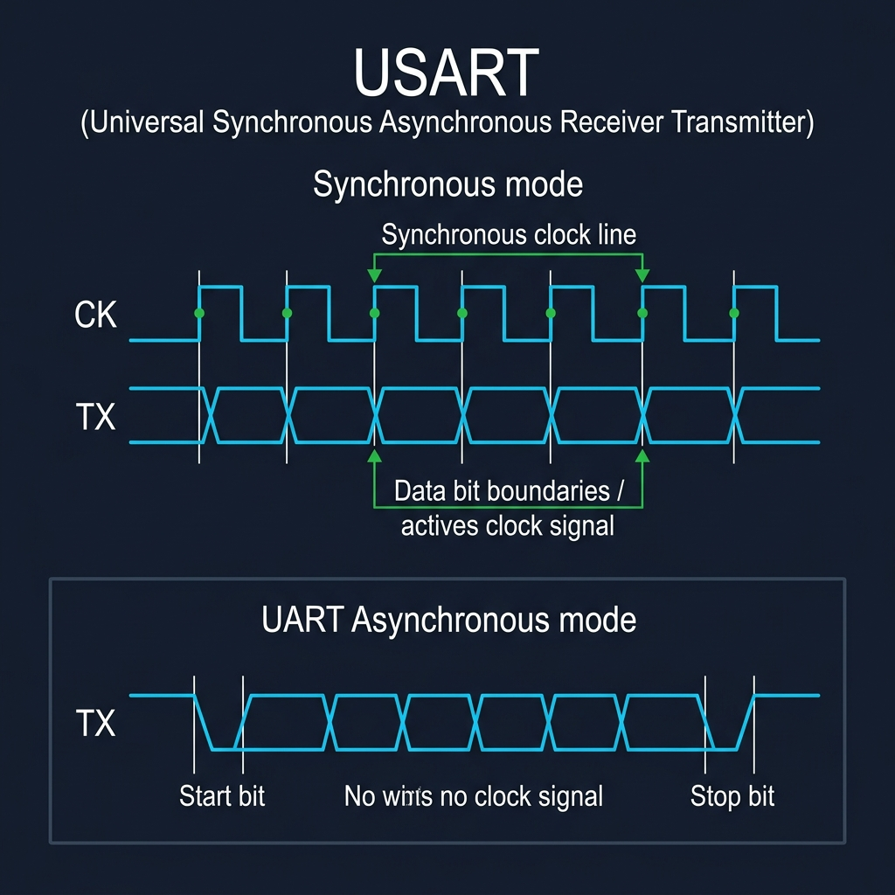
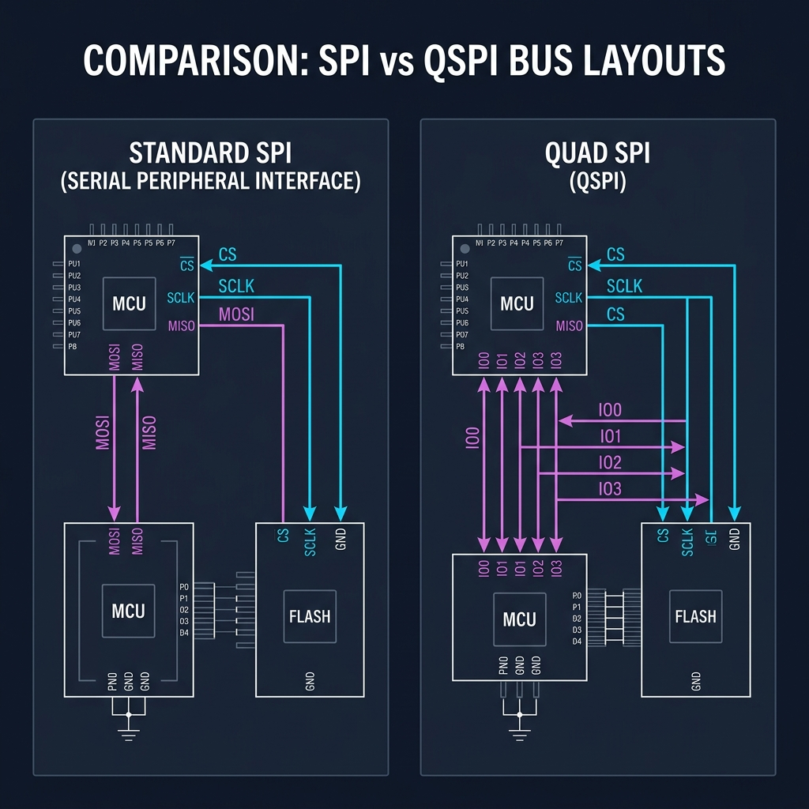
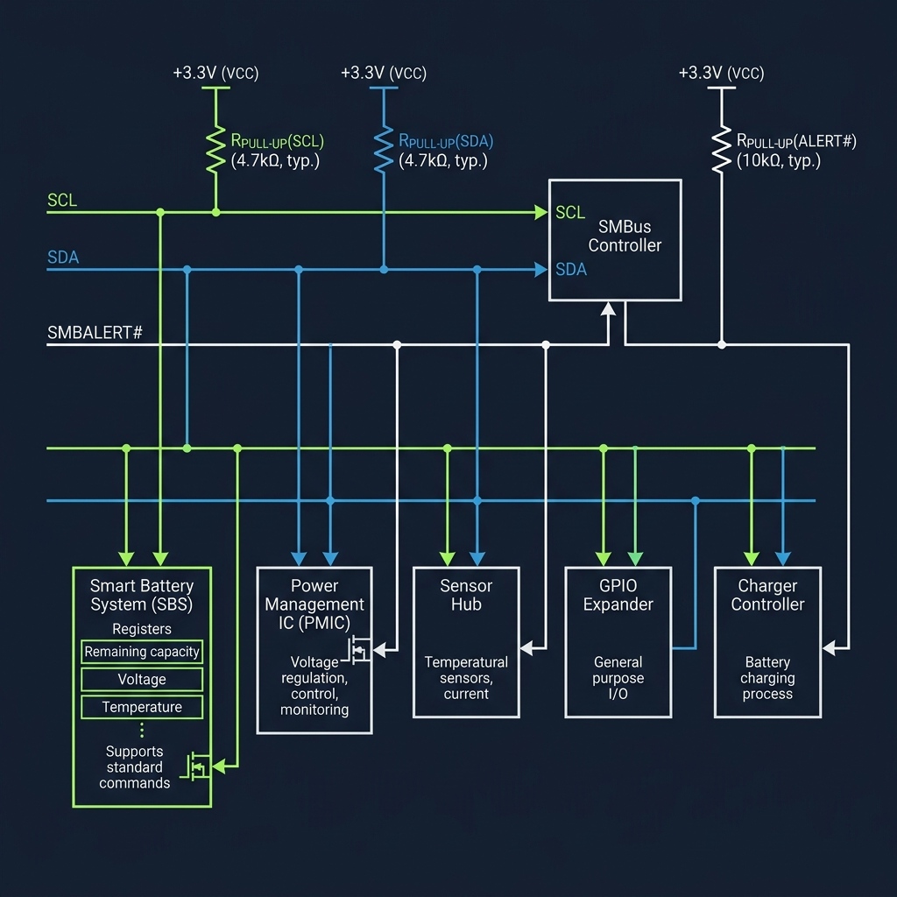
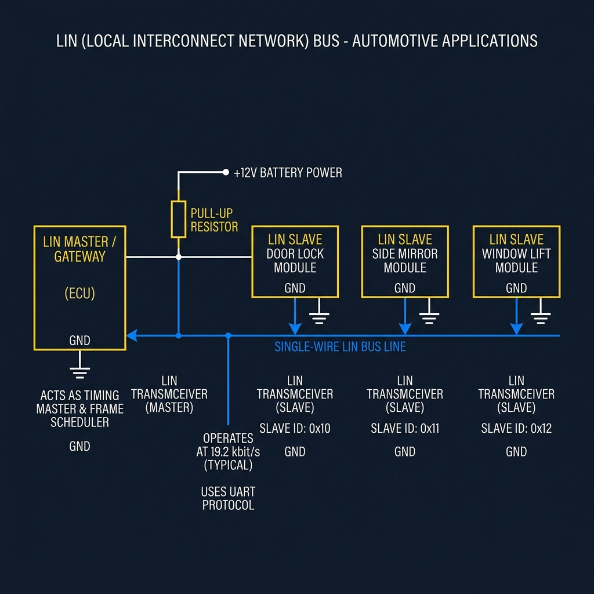
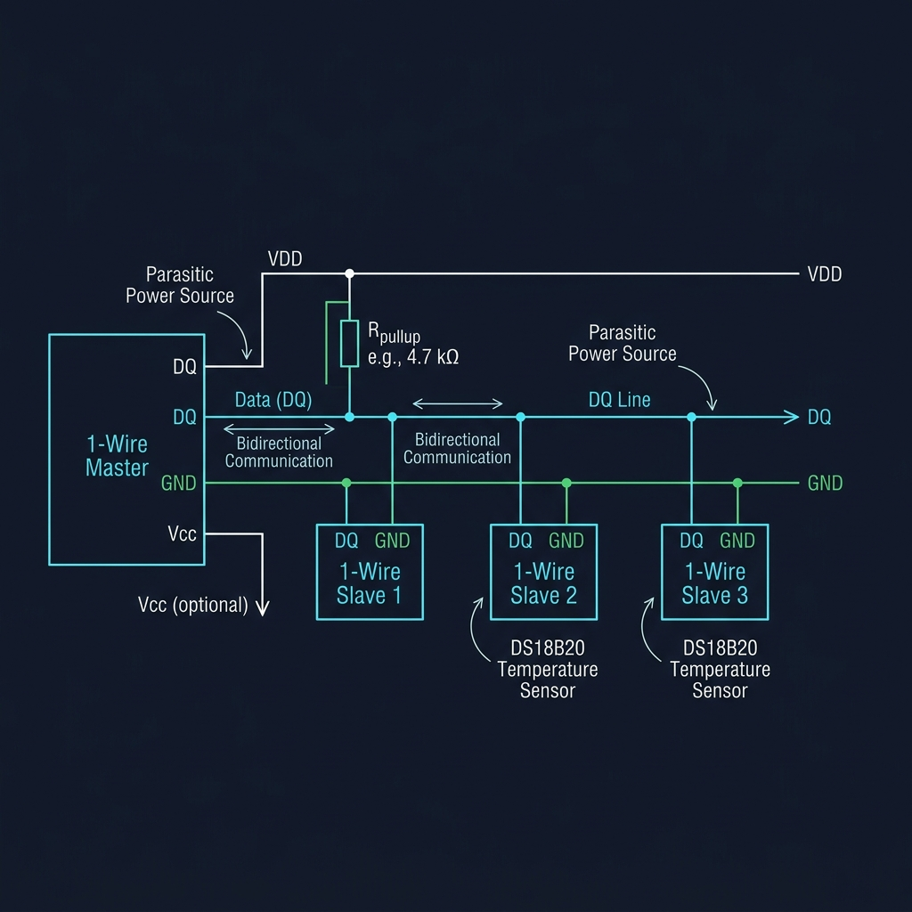

Interaction
The Roads Not Often Travelled
How constraints, cost, and physical boundaries spawned the specialized cousins of UART, SPI, I2C, and CAN.
USARTQSPISMBusLINOne-WireSerial Protocols
1. USART: The Synchronous Bridge
In our exploration of UART, we discovered that asynchronous communication is a delicate timing contract. Without a shared clock wire, nodes must rely on internal oscillators, oversampling clocks, and framing bits (Start/Stop) to synchronize. This contract is simple but costly: clock drift limits speeds, and framing adds a 20% protocol overhead on every byte.
But what if we added a clock line back to UART? That hybrid is the Universal Synchronous Asynchronous Receiver Transmitter (USART).
When configured in synchronous mode, USART transmits a dedicated clock signal alongside the data line. Instead of oversampling and searching for start bits, the receiver simply samples the data wire on the clock edges. This eliminates clock drift issues, allowing speeds comparable to SPI while retaining UART's simple frame packaging. Yet, despite being present on almost every modern microcontroller, synchronous USART is rarely used. If an engineer is willing to route a clock line, the simplicity of UART is lost; and if they have a clock line, they almost always prefer the faster shift register architecture of SPI or the multi-slave addressing of I2C. USART remains a bridge not often crossed, operating quietly in asynchronous UART mode on most developer desks.

USART Timing Diagram showing Synchronous Clock CK and Data TX Alignment vs Asynchronous UART
2. QSPI: SPI on Steroids
SPI achieved extreme throughput by sharing a clock, but it remained limited by its physical architecture: a single MOSI (Master Out Slave In) and MISO (Master In Slave Out) line. As microcontrollers shrank, board designers began moving flash memory outside the MCU package to external chips. This created a critical bottleneck: loading bootloader code and assets over a single MOSI/MISO line was too slow, stalling system startup.
The solution was Quad SPI (QSPI). Instead of keeping data lines unidirectional, QSPI converts MOSI, MISO, and two additional pins into four bidirectional data channels (IO0 through IO3). In a single clock cycle, the controller reads or writes four bits of data instead of one.
By leveraging this quad-width bus and Dual Data Rate (DDR) clocking—sampling on both rising and falling edges—QSPI increases throughput up to eightfold. This massive bandwidth allows modern microcontrollers to execute code directly from external flash memory (Execute-in-Place, or XiP), making external memory feel as responsive as internal SRAM.

Standard SPI (4 wires) vs Quad SPI (6 wires showing IO0-IO3 bidirectional lines)
3. SMBus: Stricter Rules for a Shared Conversation
I2C gave us a clean, shared bus using open-drain logic and software addressing. But I2C's flexibility was also its weakness. It lacked strict timeouts, standardized voltage thresholds, and error checking. If a slave device crashed or held SCL low (clock stretching) to process data, the entire bus could freeze indefinitely. On a PC motherboard, a single hanging temperature sensor could lock up the system.
To address this, Intel defined the System Management Bus (SMBus) in 1995. SMBus is electrically compatible with I2C but enforces a strict set of rules:
1. Bus Timeout: If SCL is held low for more than 35ms, all devices must reset their internal interface controllers and release the bus, preventing permanent lockups.
2. Packet Error Checking (PEC): Appends a Cyclic Redundancy Check (CRC-8) byte to ensure data integrity, critical for battery charging controllers.
3. SMBALERT# Line: Adds an optional interrupt wire, allowing slave devices to notify the master of events (like battery over-temperature) immediately, avoiding the need for continuous polling.
SMBus turned the cooperative conversation of I2C into a reliable, deterministic diagnostic bus for power management.

SMBus Topology showing pull-ups, SCL, SDA, and the SMBALERT# alert line
4. LIN: The Economical Sub-Bus
CAN bus solved the problem of high-noise automotive environments using differential signaling and bitwise arbitration. But this reliability came with a high cost: CAN requires a dedicated controller IP, a transceiver chip, and two twisted copper wires. Putting a CAN node in every car door, side mirror, seat motor, and window lifter would drive up vehicle costs and weight.
This economic constraint gave birth to the Local Interconnect Network (LIN) bus.
LIN is a single-wire, master-slave sub-bus. It operates at low speeds (up to 20 kbps) using standard, low-cost UART frames. It runs on a single wire pulled up to 12V (battery voltage), eliminating the need for differential transceivers. Instead of complex CAN controllers, LIN runs on cheap 8-bit microcontrollers. In a car, a single CAN-enabled body controller acts as the LIN Master, managing a cluster of LIN slaves (doors, locks, mirrors) and bridging their diagnostic info back to the primary CAN backbone, saving copper, weight, and silicon cost.

LIN single-wire network topology with Master node, slave modules, and 12V pull-up
5. One-Wire: Minimalism in Copper
If LIN reduced the bus to a single wire plus power and ground, Dallas Semiconductor's 1-Wire protocol went even further. It reduced the entire bus—power, clock, and data—to a single copper conductor (DQ) and a ground return.
1-Wire devices use parasitic power. Inside each slave device is a small capacitor. When the master lets the DQ line float HIGH, the slave harvests energy from the wire to charge its capacitor. When the master pulls the line LOW to transmit data, the slave runs off the stored capacitor charge.
With no clock wire, timing is critical. Communication is divided into precise time slots (e.g. 15µs to 60µs) where master and slave pull the line low for varying durations to represent 0s and 1s. Every 1-Wire device is factory-programmed with a unique, immutable 64-bit registration ID. This allows a master to communicate with dozens of sensors (like the DS18B20 digital thermometer) sharing the same single wire run, with zero manual address configuration. 1-Wire represents the ultimate realization of hardware minimalism.

1-Wire bus topology showing master, parasitic power slaves, DQ wire, and pull-up
6. Summary and Comparison
The history of embedded communication was never a straight line. UART, SPI, I²C, and CAN became the major highways of the interaction layer because they solved the most common problems. Yet engineers continually carved smaller paths whenever unique constraints appeared.
Some of these protocols remained specialized niches; others became industry standards. All of them remind us that embedded engineering evolves through physical and economic constraints rather than the pursuit of theoretical perfection.
Core Communication Protocols
| Protocol |
Style |
Typical Speed |
Topology |
Strength |
Common Use |
| UART |
Asynchronous, Full-Duplex |
9.6 - 115.2 kbps |
Point-to-Point (2 wires) |
Simple, no clock line needed |
Debug logs, simple telemetry |
| SPI |
Synchronous, Full-Duplex |
10 - 50+ Mbps |
Master-Slave (4+ wires) |
Extreme throughput, simple hardware |
SD cards, displays, fast sensors |
| I²C |
Synchronous, Half-Duplex |
100 - 400 kbps |
Shared Bus (2 wires) |
Low pin count, hardware addressing |
EEPROMs, onboard sensors |
| CAN |
Asynchronous, Half-Duplex |
125 kbps - 1 Mbps |
Shared Bus (2 wires) |
Noise immunity, arbitration |
Automotive, industrial control |
Unexpected Cousins
| Protocol |
Parent Protocol |
Why It Exists (Constraint) |
Typical Use |
| USART |
UART |
Adds synchronous clock line to eliminate clock drift at high speed |
High-speed serial links, synchronous peripherals |
| QSPI |
SPI |
Repurposes pins into 4 bidirectional channels to increase flash throughput |
Booting from external flash (Execute-in-Place) |
| SMBus |
I²C |
Enforces strict timeouts (35ms) and alert line to prevent bus lockups |
Smart battery packs, PC motherboard system health |
| LIN |
CAN |
Sub-bus reducing cost using single-wire 12V and basic UART logic |
Car mirrors, windows, door lock body modules |
| One-Wire |
Custom |
Ultimate pin reduction, merging data and power on a single wire |
Temperature sensor networks (DS18B20), electronic keys |
The Evolution of Constraint
Every protocol we study is a snapshot of a compromise made under a specific set of physical, financial, and temporal boundaries.
As systems developers, our task is not to find a single perfect protocol, but to understand which compromise aligns best with the constraints of the world we are building.
Engineering does not look for perfect answers. It builds paths through constraints.
Current Exploration
The Roads Not Often Travelled